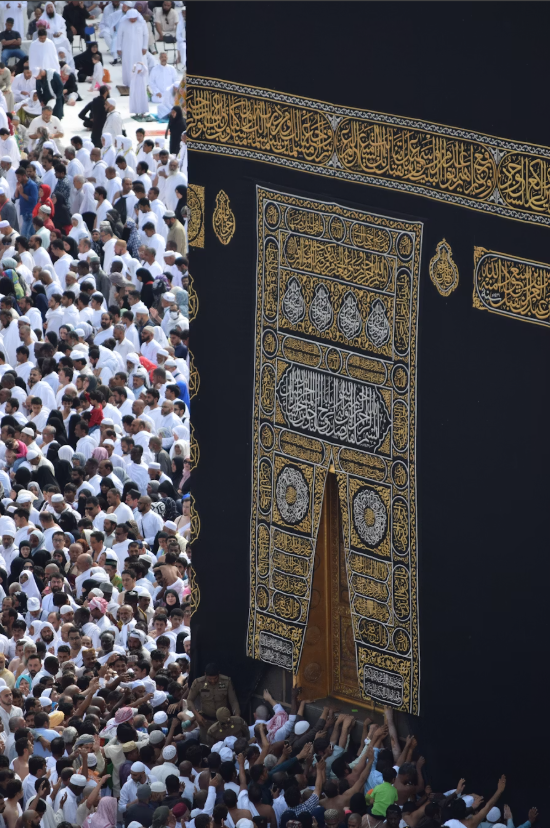

Congregational Prayer
See the current daily iqamah times, Jummah details and important Ramadan updates in one reliable place.
View prayer times →Macquarie Fields Musallah is a welcoming local prayer space! bringing our community together through worship, Quran learning and service

We are a local place for daily congregational prayer and a gentle environment for Quran learning. Our program are designed to nurture every age group with care and clarity.
Whether you are new to the area, returning to prayer, or looking for a class for your child, there is a place for you here.
Discover our story →Prayer and learning each have their own dedicated timetable so everyone knows exactly when to arrive and what to expect.
See the current daily iqamah times, Jummah details and important Ramadan updates in one reliable place.
View prayer times →Structured, age-appropriate classes with separately scheduled sessionss to preserve the tranquility of worship.
See class timetable →Register online before attending. It gives our teachers the information they need to welcome each learner well.
Start enrolment →Choose a class, send your details, and we'll confirm your place.